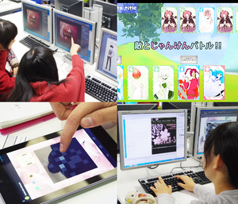

Game School Area http://www.shohoku.ac.jp/
本学は、1974年に学校法人ソニー学園により設立された総合短期大学です。総合ビジネス・情報学科では、情報化した現代のビジネス社会で活躍できる人材を育成します。情報系フィールドではWebやCG、ゲームやアプリの制作について学べます。当校ブースでは映像やPCゲーム、Androidアプリなど、様々な学生作品を展示します。ぜひブースに遊びに来てください。